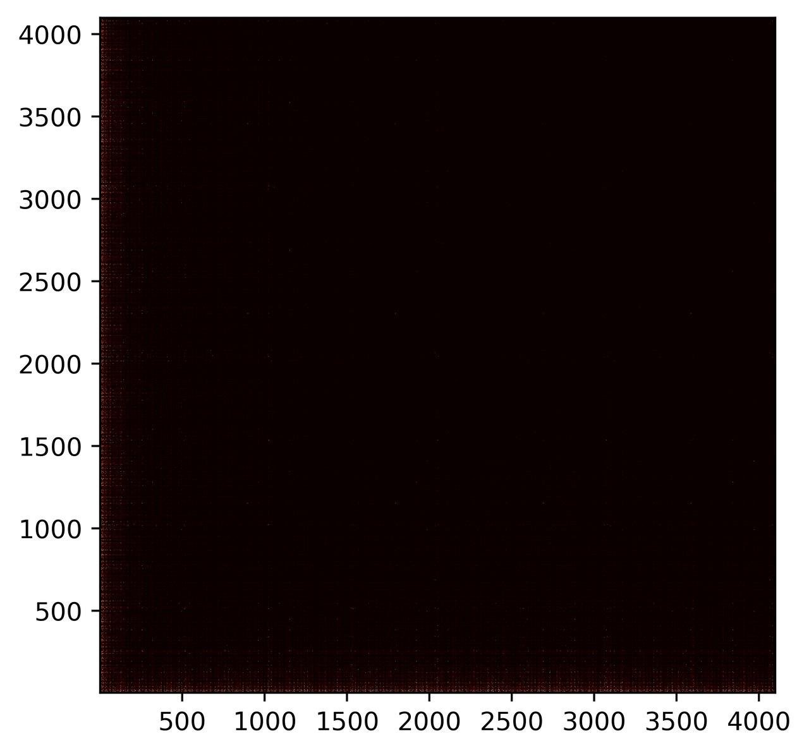

Intro
This game was sent to me by Lucy Deacon (Link to be added :P), who found it in Simon Tatham's Puzzles under the name 'Flip' around August of 2018. For the few months thereafter we went down the rabbit-hole on how to solve the game, when it's solvable, and wrote some fast programs and algorithms to check the properties of some very big boards. This post contains some of the stuff we managed to work out!
The Game
Lights Out is a game released by Tiger Electronics in 1995. You're given a 5x5 grid of lights, some illuminated and some not, and your task is to turn them all off. The problem is that toggling each light also toggles all the surrounding lights…
Unfortunately, we didn't know the game had a name, much less a Wikipedia article, until we'd finished…
I've made a little version of it here… The game works equally well (or does it!!) on different board sizes. Try to turn all 'lights' off.
Game 1: The game of Lights-Out in it's original size: 5x5. Click to flip the blue 'lights'!
The question is… How can you solve it? Is there a way to look at a position and instantly know how to solve it or even if can be solved at all?
Impossible boards?
First of all, not all boards are solvable. A 2x1 board, for example, will never let you click on only a single tile. If it starts with just one light on, there's never a way to turn it off… However, is the same true for bigger boards?
Game 2: A simple 'parity' case for lights-out.
All other boards in this page are solvable though… So don't worry :P
State
The first thing to notice is that tapping on the same square twice is the same as not tapping at all, and also that the order you tap the squares doesn't make a difference. The solution then will never require pressing any square more than once - and since we don't care about order, we can store just a yes or no for whether we need to toggle that square.
Here's the same game board (in blue, below), but also the solution for it; the red squares are the ones to tap to solve the board.
Game 3: The corresponding hidden 'state'/solution (red) for the game board (blue).
If we could work out the corresponding red board for a new unseen blue one… We'd be able to solve the game.
Forward mapping
It's not too hard to do the reverse: I.e. take the tapped squares (red) and work out the corresponding board position. There's also only one mapping from this red 'solution' board to the blue 'game' board: A light will be on if and only if it's surrounded by an odd number of 'taps'.
In fact, it's possible to represent this as matrix multiplication. If the board is \(m \times n\), we can write the board-state as a single vector \(\vec{b}\) with \(m*n\) elements. Each element is 1 if the corresponding light is on and 0 otherwise. The taps on each square - i.e. the solution for that board can be written similarly as \(\vec{t}\).
\[ \vec{b} = M\vec{t} \pmod 2 \]
We can also consider the whole problem over a binary field - so that all arithmetic is carried out modulo 2 anyway.
This matrix \(M\) is a kind of strange 'thick' diagonal matrix. For a 3x3 board it looks like this:
\[ M_{3\times3} = \begin{Bmatrix} 1 & 1 & 0 & 1 & 0 & 0 & 0 & 0 & 0 \\ 1 & 1 & 1 & 0 & 1 & 0 & 0 & 0 & 0 \\ 0 & 1 & 1 & 0 & 0 & 1 & 0 & 0 & 0 \\ 1 & 0 & 0 & 1 & 1 & 0 & 1 & 0 & 0 \\ 0 & 1 & 0 & 1 & 1 & 1 & 0 & 1 & 0 \\ 0 & 0 & 1 & 0 & 1 & 1 & 0 & 0 & 1 \\ 0 & 0 & 0 & 1 & 0 & 0 & 1 & 1 & 0 \\ 0 & 0 & 0 & 0 & 1 & 0 & 1 & 1 & 1 \\ 0 & 0 & 0 & 0 & 0 & 1 & 0 & 1 & 1 \\ \end{Bmatrix} \]
In order to find a solution for our board, we can find the inverse of this matrix (if it exists!) and solve the equation.
\[ \vec{t} = M^{-1}\vec{b} \]
If an inverse exists, then for that board there is exactly one solution corresponding to every board state - and all board states are solvable.
Unsolvable boards?
If there is an unsolvable configuration of the board, i.e. a board state which has no taps that leaves all the lights off, then it must exist in the null space of this matrix. A board is completely solvable iff the matrix has no null space.
Hacking out some very bad row-echelon reduction we could graph the nullity of these matrices for different size boards, this shows which sizes of board are always solvable, and which have many configurations that make them unsolvable.
Figure 1: What board sizes are solvable? If a boardsize is solvable completely, it's corresponding square in coloured black. A board which is 'as unsolvable' as it's possible to be is white.
We can see from this that as expected a \(1\times1\) board is always solvable, but interestingly a \(4\times 4\) is not. There's also interesting patterns forming already… It looks very regular, and there are lines forming for \(11\times n\) boards too.
Nullity?
It's interesting to mess around with one of the boards with maximum nullity. Here's a 4x4 board. It's far easier than others because if there is a solution at all for a position, then there are many.
Game 4: A 4x4 board has the maximum nullity, making it much easier to solve.
Similar to a Rubik's cube, where flipping a single piece makes the puzzle unsolvable, lights-out boards of many dimensions have similar 'parity' cases. The nullity of the mapping matrix effectively counts these. For a \(4\times 4\) board, which has a nullity of 4, there are 4 pieces which are fully determined by the remaining 12. Also, for every solvable board, there are \(2^4 -1\) unsolvable ones.
'Cascading'
One (human) way of trying to solve a lights-out puzzle is to always try to click under any light. If you go through the board row-by-row downwards, and always click below any 'on' lights, you can take any game state and 'cascade' all remaining lights into the bottom row.
At this point, you can click a few times in the top row, and repeat the process.
Clicking just one square in the top row and cascading it to the bottom will cause some of the squares in the bottom row to flip. This means that each square in the top row corresponds (after cascade) to some subset of the bottom row being flipped. If we work out what these correspondences are, we have another way of solving the board.
Game 5: An animation of cascading. Pick a random square in the top row, then 'cascade' it downwards. Eventually, this will solve the board!
Since it's possible to always reduce any board (via cascade) to having lights only in the bottom row, another way to ask if a boardsize is solvable if it's possible to reach any bottom row configuration by click/cascading. This is true because cascades commute.
If we construct a matrix from the resulting bottom rows of all possible click-a-square/cascade ops, it will span all solvable bottom rows. Then, the boardsize will always be solvable iff that matrix has a nullity of 0.
This is far more efficient than our previous method. Since we can equally perform cascading left-to-right as well as downwards the matrices we need to check are only \(min(m,n)\times min(m,n)\) rather than \(mn \times mn\) as before.
It's interesting that a 4x4 board is always solvable in one try via cascading, since it's nullity spans the entire bottom row.
Game 6: For fun, here's a very large game cascading. Note the patterns left in the last row. We're interested if it's possible to construct any pattern here by click/cascading any number of times.
Maximum nullity
An interesting result from this is there is a maximum nullity for any board.
Namely, since we can cascade any board into a single row, the nullity of the mapping between solution and boardstate cannot be larger than \(m\). Also, we can equally perform the cascade left-to-right, giving an upper bound of \(min(m,n)\).
This can also be proven by looking at the structure of our original mapping matrix \(M\).
\[ M_{3\times3} = \begin{Bmatrix} 1 & 1 & 0 & 1 & 0 & 0 & 0 & 0 & 0 \\ 1 & 1 & 1 & 0 & 1 & 0 & 0 & 0 & 0 \\ 0 & 1 & 1 & 0 & 0 & 1 & 0 & 0 & 0 \\ { \color{red}1 } & 0 & 0 & 1 & 1 & 0 & 1 & 0 & 0 \\ 0 & { \color{red}1 } & 0 & 1 & 1 & 1 & 0 & 1 & 0 \\ 0 & 0 & { \color{red}1 } & 0 & 1 & 1 & 0 & 0 & 1 \\ 0 & 0 & 0 & { \color{red}1 } & 0 & 0 & 1 & 1 & 0 \\ 0 & 0 & 0 & 0 & { \color{red}1 } & 0 & 1 & 1 & 1 \\ 0 & 0 & 0 & 0 & 0 & { \color{red}1 } & 0 & 1 & 1 \\ \end{Bmatrix} \]
This diagonal (shown in red) will always run from \((0,m)\) to \((n*(m-1), mn)\), and can be used to construct the first \(n*(m-1)\) columns of a matrix in row-echelon form. The maximum nullity of this matrix therefore is \(n\). Similarly to before, the board can be rotated prior to constructing the matrix, and so the maximum nullity is \(min(m,n)\).
Bitops
In order to speed up calculating large boards, we wrote some Very Fasttm c++ matrix code, to perform all binary field arithmetic in parallel with bitops. The vectors, as well as matrix rows are encoded as several unsigned integers, each storing 32 binary values. Multiplication can then simply be performed using xor. Similarly row-echelon reduction and calculation of the rank/nullity of each matrix can be done extremely quickly.
The cascade operation can also be treated with bit-ops. We take the current highest non-zero row. This is the row we need to 'click under', so to speak, and denote it as the top row. We take the row below it (the middle row) and xor it in-place with the top row. This forms the center of the cross.
Next, we can xor the middle row once again with the top row bitshifted once left, and once right (being careful to handle overlaps), forming the left/right arms of the cross. We can then xor the row further below (the bottom row) in-place with the top row, forming the base of the cross. Finally the top row can be set to 0s, which is effectively the top of the cross.
This allows us to perform up to 32 'clicks' at once, in very few bit operations.
Low memory cascade
Although this cascade is fast, it requires a lot of memory. In order to generate the matrix for, e.g. a \(4000 \times 4000\) board, it requires 4000 boards, or the same board to be used 4000 times. This is getting very large!
If we consider click-cascading only on an empty board, we only ever have 3 rows with non-zero entries at a time. We can perform the operation only with 3 rows, shuffling them around on each iteration.
We can do better though. With the bottom row starting empty, it really just becomes set equal to the top row. This means we can store just 2 rows, and treat them as top/middle. We can perform each cascade iteration with 3 xors and two bitshifts for up to 32 clicks. It's also close in memory which should reduce cache misses.
All in all, this sped up our program by from taking almost 20 hours to calculate all boards up to \(512\times 512\) to just 12 seconds. It's 6000 times faster, without parallelization. The speedup is even more significant vs the pre-cascading programs and our initial python/numpy code too.
Lots of boards
In order to calculate nullity for a few million boards… We could compute the matrices for all boards of a certain width simultaneously. Cascade once, grab the new bottom row for each board, copy it into a matrix, reduce it in-place and calculate nullity, and discard it. We can then iterate to calculate the nullity of a board that is \((m+1)\times n\). To parallelize, each core just takes a width of board and calculates the nullity of all boards of that width up to a maximum. This took a few days to run on a HPC cluster, even with all of our optimizations.
Results!!
The resulting images for different sizes.

Here we can see the patterns that continue even for very large boards. In the 512x512 image, there's a faint grid forming at near powers of 2: 127 and 255. Above it, there's a similar line around 63. The largest size: 4096 requires zooming for the 'constellations' to be even visible, but they're there, with several big spots also scattered around.
It's interesting that, as you move further 'out', the boards are relatively more solvable. The intuition is that, for a board to have a very high nullity, many it's click/cascade vectors must align. This becomes increasingly more unlikely to happen as these vectors increase in size and number.
There're very few large boards which loose all dimensions. These are the only ones larger than 1024*1024 (not including rotations).
| height | width | percentage nullity |
|---|---|---|
| 1023 | 1535 | 1.0 |
| 1023 | 3071 | 1.0 |
| 1279 | 3839 | 1.0 |
| 1791 | 2303 | 1.0 |
| 2047 | 3071 | 1.0 |
| 1407 | 3967 | 0.9097370291400142 |
| 1535 | 3071 | 0.9993485342019544 |
These are all surprisingly structured! Often near 2n-1 or 3*2n-1 (i.e. 3071).
Other…
Looping patterns?
Since a cascade operation can be written as a matrix multiplication (if the board has width \(m\), the resulting cascade matrix is \(2m\times 2m\)), we can consider powers of it instead of repeatedly cascading.
The question becomes, what power of this matrix results in the identity matrix (or the same cascade matrix again)? This would mean the nullity of boards of a certain width would form a long repeating pattern based on their height.
The period of small cascade matrices; less than 40, are all about/below 8000-16000, but it blows up from there… The period of the cascade over a board of width 40 is over one million iterations.
Funnily, we both came up with this idea coincidentally within a few minutes of each other.
Sequences
Some board widths are surprisingly solvable/ unsolvable. We found boards of size (\(10 \times 31n-1\)) are all unsolvable (nullity of 10) to as high as we could calculate at the time.
Several other widths are surprisingly solvable, 10 (other than above), 81, and many more.
OEIS
The Online Encyclopedia of Integer Sequences is a searchable database containing, well, integer sequences. After finishing up, we tried searching it for our sequence. It turns out square boards have their own entry here! This was the first time we knew the game by it's proper name, and found the game's relation to other areas of cellular automata.
We'd generated almost twice as far as the furthest though! The highest term in the OEIS sequence is 2363, while ours is ~4100.
Conclusion
I think we both agree we haven't completely figured out as much as we'd like… The patterns are still somewhat a mystery, even if we've found some logic in them! It's one to revisit for sure :P.
As always, feel free to dig through the source code for this page either here or on my Github for the site! It's written in pure javascript/html canvas (apart from the english, that's written in english…).